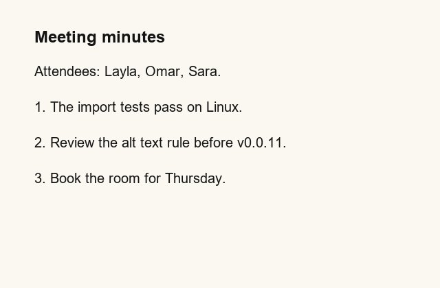

Draft translation: please check it with a native speaker before release.
이 페이지는 OCR 데모의 일부입니다. 상태: MVP.
스캔한 페이지도 사진과 같은 방식으로 읽습니다. 줄의 순서가 유지되므로 회의록은 위에서 아래로 읽힙니다.

표는 아직 표로 읽지 않습니다. 표 안의 단어는 찾을 수 있지만 행과 열은 유지되지 않습니다.